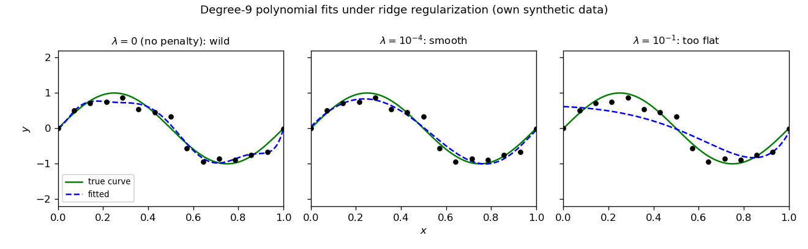
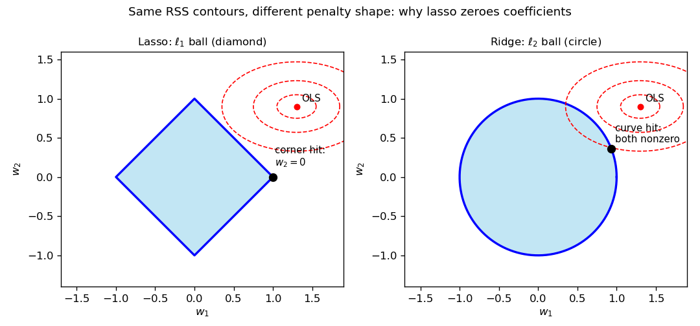
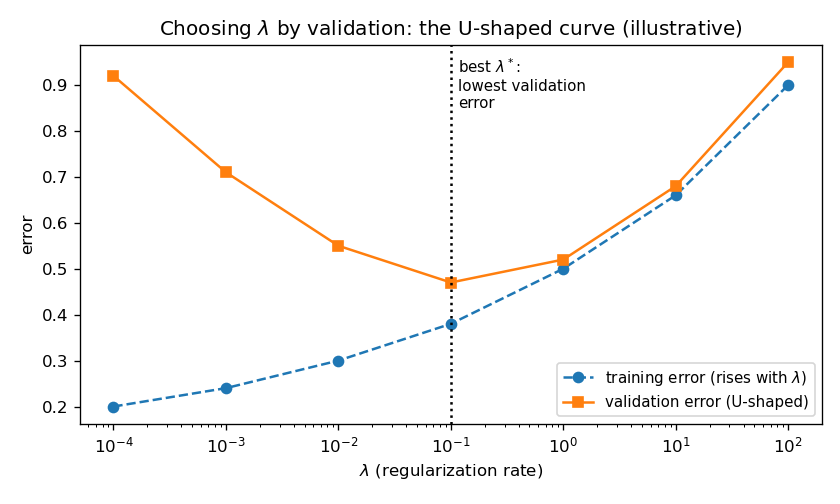

28. Regularization: ridge and lasso
§23.10 ended with a promise and a deferral: add a penalty on large parameters to least squares, get ridge regression, and leave the full story — ridge and lasso, the bias–variance trade-off, how \(\lambda\) is actually chosen — to this chapter. §27.4 already borrowed ridge for kernel regression. This chapter pays both debts. Everything here comes from the MLT Week 3 slides (Ashish Tendulkar) — the regularization block that closes the regression unit — with the practical \(\lambda\)-selection half from the MLP Week 4 slides.
28.1 The problem, restated: overfitting wears big weights
§23.9’s verdict: capacity too low ⇒ underfitting; capacity too high ⇒ overfitting. The lecture makes the mechanism concrete with a degree-9 polynomial fit on a small dataset. The fitted weights come out grotesque — \(w_4 = -3332.88\), \(w_5 = 2993.67\), \(w_6 = -1304.04\) — and the lecture’s observation is the whole diagnosis:
- The curve threads every training point (training error \(\approx 0\)).
- Between the points it whipsaws wildly — it memorized the noise, §22.10’s memorizer in polynomial costume.
- The signature of the disease is the weights themselves: higher-degree features carry enormous, cancelling weights. Overfitting looks like huge parameters.
Basically, … “The degree-9 curve aced the practice exam and flunked the real one — and you can see the cheating in the weights: thousands, cancelling each other out.”
There are two cures (§23.9 named the first): pick a smaller degree \(m\) by validation, or penalize large parameters directly — keep the degree-9 features, but forbid the weights from exploding. That second cure is regularization.
28.2 The fix: charge rent on big weights
Def (regularized objective). The lecture modifies the least-squares loss by adding a penalty term: \[\boxed{J(w) = \tfrac{1}{2}(Xw - y)^T(Xw - y) + \lambda \cdot \text{penalty}}, \qquad \lambda > 0.\] Two components, and the lecture names both:
- The penalty = a function of the weight vector \(w\) — it measures “how big” the weights are.
- The regularization rate \(\lambda\) = how much penalty to add — the dial that controls the strength of the cure.
Regularizing changes the loss, so it changes the loss’s derivative, so it changes the weight-update rule in gradient descent. That is the entire machinery: one extra term, and both the closed-form solution and the iterative one shift.
Basically, … “Fit the data, but pay a tax on big weights. The tax bill has two parts: what counts as big (the penalty) and the tax rate (\(\lambda\)).”
28.3 Ridge regression: the \(\ell_2\) penalty
Def (ridge objective). Ridge uses the squared \(\ell_2\) norm of the weight vector as the penalty: \[\boxed{J(w) = \frac{1}{2}\sum_{i=1}^{n}\big(w^T x^{(i)} - y^{(i)}\big)^2 + \frac{\lambda}{2}\sum_{j=1}^{m} w_j^2}, \qquad \lambda > 0,\] in vectorized form \[\boxed{J(w) = \tfrac{1}{2}(Xw - y)^T(Xw - y) + \tfrac{\lambda}{2}\lVert w\rVert_2^2 = \tfrac{1}{2}(Xw - y)^T(Xw - y) + \tfrac{\lambda}{2}w^Tw}.\]
Note (the \(\lambda\) convention, flagged as §27.4 did). This chapter follows the lecture: the penalty carries \(\frac{\lambda}{2}\), so the gradient below comes out clean as \(\lambda w\) with no stray factor of 2. §23.10 wrote the penalty as \(\lambda\lVert\theta\rVert^2\) and then absorbed the 2 into \(\lambda\); §27.4 uses \(\frac{\lambda}{2}\) exactly as here. All three are the same objective up to renaming \(\lambda\) — the minimizer never cares about the bookkeeping.
Basically, … “Ridge = least squares, plus a tax of \(\lambda/2\) on every squared weight. Big weight ⇒ big tax bill ⇒ the optimizer keeps weights small.”
28.4 The ridge solution, by hand
The lecture differentiates term by term (same steps as §23.3’s least-squares gradient, plus the penalty). Expanding, \[J(w) = \tfrac{1}{2}\big(w^TX^TXw - 2w^TX^Ty + y^Ty + \lambda w^Tw\big),\] and differentiating each piece (§10.1’s recipe): \[\begin{aligned} \nabla_w J &= \tfrac{1}{2}\big(2X^TXw - 2X^Ty + 0 + 2\lambda w\big) \\ &= \boxed{\nabla_w J = X^TXw - X^Ty + \lambda w}. \end{aligned}\] Eg (one GD step, fully worked). Data: one feature, no intercept, points \((x, y) = (1, 2), (2, 3)\); \(\lambda = 2\), step size \(\alpha = 0.1\), start \(w_0 = 0\). The lecture’s update is \(w_{k+1} := w_k - \alpha\big(X^T(Xw_k - y) + \lambda w_k\big)\). Here \(X^TX = 1^2 + 2^2 = 5\) and \(X^Ty = 1\cdot 2 + 2\cdot 3 = 8\). Then \(w_1 = 0 - 0.1\big(X^T(0 - y) + 0\big) = 0.1 \cdot 8 = 0.8\). One step already walks from \(0\) toward the exact answer (Problem 4 checks it against the closed form).
Set the gradient to zero for the closed form: \[X^TXw - X^Ty + \lambda w = 0 \quad\Longrightarrow\quad \boxed{(X^TX + \lambda I)w = X^Ty},\] \[\boxed{\hat w_{\text{ridge}} = (X^TX + \lambda I)^{-1}X^Ty}.\] This is §23.10’s compact form, now earned from the lecture’s \(\frac{\lambda}{2}\) convention. Two endpoints, straight from the lecture:
- No regularization. \(\lambda \to 0\): \(\hat w \to (X^TX)^{-1}X^Ty\) — the ordinary least-squares solution. The tax is switched off.
- Infinite regularization. \(\lambda \to \infty\): the \(\lambda I\) term dominates, \(\hat w \to 0\) — every weight taxed into oblivion.
And §23.10’s homework result is why the inverse always exists: for \(\lambda > 0\) and \(z \ne 0\), \(z^T(X^TX + \lambda I)z = \lVert Xz\rVert^2 + \lambda\lVert z\rVert^2 > 0\), so \(X^TX + \lambda I\) is positive definite — invertible even when \(X\)’s columns are dependent and plain least squares has infinitely many answers.
Basically, … “Ridge has a formula, not just an algorithm: \((X^TX + \lambda I)^{-1}X^Ty\). Turn \(\lambda\) to zero and you get plain least squares back; crank it to infinity and every weight dies to zero.”
Note (the Bayesian reading: ridge = MAP with a Gaussian prior). §20.12(ii) promised this connection; the MLT lectures never state it — the four lines below are the book’s own derivation, from definitions already in Chapters 19–20. Assume Gaussian noise, \(y \mid X, w \sim N(Xw, \sigma^2 I)\) (§19.6): \[\log P(y \mid X, w) = -\frac{1}{2\sigma^2}\|Xw - y\|^2 + c_1.\] Put a Gaussian prior on the weights, \(w \sim N(0, \tau^2 I)\) — “before seeing data, I believe the weights are small”: \[\log f(w) = -\frac{1}{2\tau^2}\|w\|^2 + c_2.\] MAP (§20.10) maximizes the sum: \[\hat w_{MAP} = \arg\max_w \left[-\frac{1}{2\sigma^2}\|Xw-y\|^2 - \frac{1}{2\tau^2}\|w\|^2\right] = \arg\min_w \left[\frac{1}{2}\|Xw-y\|^2 + \frac{\sigma^2}{2\tau^2}\|w\|^2\right],\] exactly the ridge objective (§28.3) with \(\boxed{\lambda = \sigma^2/\tau^2}\) — the noise variance over the prior variance. The “tax rate” \(\lambda\) suddenly has a meaning: how noisy you think the data is, divided by how strongly you believed the weights should be small. (Lasso’s counterpart runs the same four lines with a Laplace prior \(f(w_j) \propto e^{-c|w_j|}\), whose log is the \(\ell_1\) penalty — stated as the standard counterpart, not derived.)
28.5 Gradient descent for ridge
From the gradient, the lecture’s update rule: \[\boxed{w_{k+1} := w_k - \alpha\big(X^T(Xw_k - y) + \lambda w_k\big)}.\] Read it against §23.3’s unregularized update \(w_{k+1} := w_k - \alpha X^T(Xw_k - y)\): the only change is the extra \(-\alpha\lambda w_k\) — every step, each weight is dragged a little toward zero in addition to following the data’s gradient. That drag is the tax, collected per-iteration.
Basically, … “Gradient descent with ridge = ordinary gradient descent, plus a small tug toward zero on every step. The tug is \(\lambda\)-sized.”
28.6 What \(\lambda\) does: shrinkage, then underfitting
The lecture’s slide on the effect of \(\lambda\) is blunt: as \(\lambda\) increases, the model loses capacity, and for very large \(\lambda\) it underfits. The degree-9 polynomial experiment makes it visible:

- \(\lambda = 0\): the penalty is off — the wild interpolating curve, §28.1’s disease.
- Small \(\lambda > 0\): weights shrink just enough to kill the whipsaw; the curve tracks the true shape. The sweet spot.
- Large \(\lambda\): weights crushed toward zero; the fit goes nearly flat and misses the signal — underfitting, exactly as the lecture warns.
Note. Shrinking \(\ne\) zeroing: ridge makes weights small, essentially never exactly zero. If you want coefficients killed outright, that is lasso’s job (§28.7).
Basically, … “\(\lambda\) is a dimmer switch on model flexibility: 0 = blinding overfit, a little = just right, a lot = the model goes blind and underfits.”
28.7 Lasso: the \(\ell_1\) penalty, and exact zeros
Def (lasso objective). Lasso swaps the squared penalty for the \(\ell_1\) norm: \[\boxed{J(w) = \tfrac{1}{2}(Xw - y)^T(Xw - y) + \tfrac{\lambda}{2}\lVert w\rVert_1 = \tfrac{1}{2}(Xw - y)^T(Xw - y) + \tfrac{\lambda}{2}\sum_{j=1}^{m}\lvert w_j\rvert}.\] The lecture is honest about the cost: estimating the lasso weights needs specialized optimization algorithms, beyond this course’s scope — the \(\lvert w_j\rvert\) kink at zero means no clean gradient-and-inverse route like §28.4. (The MLP course just calls sklearn’s Lasso.)
But the headline property needs no optimizer to state: lasso sets some coefficients exactly to zero. It does feature selection by itself — out of a pile of candidate features, it keeps a few and discards the rest. Two ways to see why:
- The 1-D case (Problem 3 proves it). With one feature, the lasso solution is the soft-thresholded least-squares answer: \(\hat w = \mathrm{sign}(\rho)\,(|\rho| - \lambda/2)_+/\lVert x\rVert^2\) with \(\rho = x^Ty\). If \(|\rho| \le \lambda/2\) — the feature’s pull on the data is weaker than the tax — the weight is not shrunk, it is deleted: exactly \(0\). Ridge’s 1-D answer \(\rho/(\lVert x\rVert^2 + \lambda)\) only ever shrinks.
- The geometry. Minimizing \(J\) equals minimizing the squared error subject to a penalty budget \(\lVert w\rVert \le t\). The \(\ell_1\) budget region is a diamond — it has corners on the axes. The error contours (ellipses around the OLS point) generically first touch a diamond at a corner, and a corner means some \(w_j = 0\). The \(\ell_2\) budget is a ball — smooth, no corners — so the touch point keeps every coordinate nonzero:

Basically, … “Ridge puts weights on a diet; lasso fires some of them. The diamond has corners and the circle doesn’t — corners are where coordinates are exactly zero.”
28.8 Ridge vs lasso, side by side
| Ridge (\(\ell_2\)) | Lasso (\(\ell_1\)) | |
|---|---|---|
| Penalty | \(\frac{\lambda}{2}\lVert w\rVert_2^2\) | \(\frac{\lambda}{2}\lVert w\rVert_1\) |
| Closed form | Yes: \((X^TX+\lambda I)^{-1}X^Ty\) | No — specialized optimizers (beyond scope; sklearn in MLP) |
| Effect on weights | Shrinks toward 0, never exactly 0 | Shrinks and zeroes: automatic feature selection |
| \(\lambda\to 0\) | Least squares | Least squares |
| \(\lambda\to\infty\) | All weights \(\to 0\) | All weights \(\to 0\) |
Note (elastic net). The lecture lists a third type — the combination of \(\ell_1\) and \(\ell_2\), elastic net — with no further detail; the MLP slides add its cross-validated estimator ElasticNetCV. It inherits lasso’s sparsity and ridge’s stability, and belongs to the same choose-by-validation discipline as everything in this chapter.
Basically, … “Many correlated features and you want them all, small? Ridge. A pile of features and you suspect only a few matter? Lasso.”
28.9 The bias–variance trade-off, tied to \(\lambda\)
§27.10(i) promised this section; here it is, in exactly the terms the sources support. The lecture never writes a bias–variance decomposition formula — what it gives, twice, is the trade-off itself:
- Too small \(\lambda\) ⇒ the fit bends to every wiggle of this particular training sample — the degree-9 whipsaw, the memorizer. The model is over-sensitive to the sample’s noise. Call that the high-variance end: refit on a fresh sample and the curve swings wildly.
- Too large \(\lambda\) ⇒ the fit is too stiff to follow the true shape — the nearly-flat panel, the lecture’s “the model loses its capacity… underfits.” The model systematically misses the signal no matter the sample. Call that the high-bias end.
- The sweet spot sits between them, and the \(\lambda\)-vs-validation-error curve (§28.10) draws the trade-off: error falls as the noise-chasing stops, then rises as stiffness sets in. \(\lambda\) is the dial of the trade-off.
Note (scope). The formal \(\mathbb{E} = \mathrm{bias}^2 + \mathrm{variance} + \mathrm{noise}\) decomposition is not in these lectures; this section stays with their qualitative reading — flexibility against the sample’s noise on one side, stiffness against the signal on the other, \(\lambda\) choosing the balance. Nothing here contradicts the formal version; the course simply never states it.
Basically, … “Small \(\lambda\) = a nervous student who memorizes the textbook’s typos; large \(\lambda\) = a student who only learned the chapter headings. You want the one in between — and \(\lambda\) picks which student you get.”
28.10 Choosing \(\lambda\): the validation discipline
\(\lambda\) is a hyperparameter — §22.10’s job (ii), picking the collection, not the parameters. The lecture gives the complete procedure, four steps:
- Construct a set of candidate \(\lambda\) values to experiment with (a grid, usually logarithmic: \(10^{-4}, 10^{-3}, \ldots, 10^2\)).
- For each candidate: train the model, and compute the error on the validation set (cross-validation error). Pick the \(\lambda\) with the least validation error.
- Retrain with the chosen \(\lambda\) on the entire training set.
- Report the final model’s performance on the test set — untouched until now (§23.9’s discipline, unchanged).
The validation-error curve is typically bowl-shaped (U-shaped): high at tiny \(\lambda\) (overfitting end), high at huge \(\lambda\) (underfitting end), minimum at the sweet spot. The lecture’s own figure finds the most appropriate \(\lambda = 0.1\) at the bowl’s bottom:

Note (the MLP practice). In sklearn the regularization rate is the alpha argument — Ridge(alpha=1e-3) sets \(\lambda = 10^{-3}\) (and SGDRegressor(alpha=1e-3, penalty='l2') is the same idea by gradient descent). Doing the four steps by hand for every \(\lambda\) is tedious, so the MLP slides point at the estimators that automate step 2: RidgeCV / LassoCV / ElasticNetCV perform the cross-validated \(\lambda\) search internally, and GridSearchCV / RandomizedSearchCV generalize the same grid-search pattern to any hyperparameter.
Basically, … “Don’t guess \(\lambda\) — audition a lineup of them on held-out data, hire the winner, then give it the full training set and report its score on data it has never seen. The U-curve tells you the auditions worked.”
28.11 Worked example: one tiny dataset, three fits
Setup (deliberately nasty): two nearly collinear features, three points, no intercept. \[x_1 = \begin{pmatrix}1\\2\\3\end{pmatrix},\quad x_2 = \begin{pmatrix}1\\1.9\\3.1\end{pmatrix},\quad y = \begin{pmatrix}2\\4.3\\5.7\end{pmatrix}.\] Correlation of the columns \(\approx 0.997\) — \(x_2\) is almost a copy of \(x_1\). The sufficient statistics: \[X^TX = \begin{pmatrix}14 & 14.1\\14.1 & 14.22\end{pmatrix},\qquad X^Ty = \begin{pmatrix}27.7\\27.84\end{pmatrix},\qquad \det(X^TX) = 14\cdot 14.22 - 14.1^2 = 0.27.\] That tiny determinant is the warning light: \(X^TX\) is nearly singular, so plain least squares will be unstable.
Fit 1 — unregularized (\(\lambda = 0\)). \((X^TX)^{-1} = \frac{1}{0.27}\begin{pmatrix}14.22 & -14.1\\-14.1 & 14\end{pmatrix}\), so \[\hat w_1 = \frac{14.22\cdot 27.7 - 14.1\cdot 27.84}{0.27} = \frac{1.35}{0.27} = 5,\qquad \hat w_2 = \frac{-14.1\cdot 27.7 + 14\cdot 27.84}{0.27} = \frac{-0.81}{0.27} = -3.\] Predictions: \(X\hat w = (5-3,\ 10-5.7,\ 15-9.3)^T = (2, 4.3, 5.7)^T = y\) — training MSE \(= 0\). The trap, exactly as §23.9 warns: zero training error from weights \((5, -3)\) that violently cancel — one feature’s coefficient is large positive, its near-twin’s large negative. Any fresh noise would swing this fit wildly.
Fit 2 — ridge, \(\lambda = 1\). \(X^TX + I = \begin{pmatrix}15 & 14.1\\14.1 & 15.22\end{pmatrix}\), \(\det = 15\cdot 15.22 - 14.1^2 = 29.49\): \[\hat w_1 = \frac{15.22\cdot 27.7 - 14.1\cdot 27.84}{29.49} = \frac{29.05}{29.49} \approx 0.985,\qquad \hat w_2 = \frac{-14.1\cdot 27.7 + 15\cdot 27.84}{29.49} = \frac{27.03}{29.49} \approx 0.917.\] Predictions \(\hat y \approx (1.902,\ 3.712,\ 5.797)^T\); residuals \(\approx (-0.098,\ -0.588,\ 0.097)\); training MSE \(\approx 0.122\). The wild \((5,-3)\) collapsed to a calm \((0.985, 0.917)\) — both features share the load, same sign, no cancellation. Push further to \(\lambda = 5\): \(\hat w \approx (0.841, 0.832)\), MSE \(\approx 0.515\) — shrinkage deepening, error rising: the underfitting end of §28.6.
Fit 3 — lasso, \(\lambda = 1\). No closed form, so coordinate descent with soft-thresholding (threshold \(\lambda/2 = 0.5\); column norms \(\lVert x_1\rVert^2 = 14\), \(\lVert x_2\rVert^2 = 14.22\)). Start \(w = (0,0)\): - Sweep 1: \(w_1 \gets S(27.7,\, 0.5)/14 = 27.2/14 = 68/35 \approx 1.943\); then \(w_2 \gets S(27.84 - 14.1\cdot 1.942857,\, 0.5)/14.22 = S(0.4457,\, 0.5)/14.22 = 0\) — below threshold, deleted. - Sweep 2: \(w_1\) recomputes to the same \(1.943\); \(w_2\) stays \(0\). Converged: \(\boxed{\hat w = (1.943,\ 0)^T}\).
Check (KKT): gradient of the squared-error half at \(\hat w\) is \(X^T(X\hat w - y) \approx (-0.5,\ -0.4457)^T\); for \(w_1 \ne 0\) this equals \(-\frac{\lambda}{2}\mathrm{sign}(w_1) = -0.5\) ✓, and \(|{-0.4457}| \le 0.5 = \lambda/2\) permits \(w_2 = 0\) ✓. Training MSE \(\approx 0.064\). The redundant twin feature is gone — sparsity, on a hand-checkable example.
| Fit | \(\hat w_1\) | \(\hat w_2\) | Train MSE | Reading |
|---|---|---|---|---|
| OLS (\(\lambda=0\)) | \(5\) | \(-3\) | \(0\) | Memorizer: exact on training, unstable weights |
| Ridge \(\lambda=1\) | \(0.985\) | \(0.917\) | \(0.122\) | Shrunk: stable, shares load across twins |
| Ridge \(\lambda=5\) | \(0.841\) | \(0.832\) | \(0.515\) | Over-shrunk: sliding toward underfit |
| Lasso \(\lambda=1\) | \(1.943\) | \(0\) | \(0.064\) | Sparse: redundant feature deleted |
Basically, … “Same three points, three personalities: OLS memorized them with crazy cancelling weights, ridge calmed both weights down, lasso fired the redundant feature outright.”
28.12 Where this goes next
- Ridge, kernelized. §27.4–§27.6 already ran this chapter’s ridge objective through the kernel trick: \((K + \lambda I)\alpha = y\). Regularization is what keeps that infinite-dimensional fit solvable and honest.
- The \(\lambda\) discipline generalizes. Everything in §28.10 — candidates, validation error, retrain, test — is §22.10’s model-selection job (ii) in full; later chapters reuse it for every hyperparameter, not just \(\lambda\).
- Priors, derived. §20.12(ii) promised that ridge’s penalty has a probabilistic reading — MAP with a Gaussian prior. The MLT lectures never state that connection, so §28.4 derives it as the book’s own four-line argument (not a lecture claim): with Gaussian noise and a \(N(0, \tau^2 I)\) prior on \(w\), the MAP estimate is exactly the ridge objective, with \(\lambda = \sigma^2/\tau^2\).
Problem set
Ridge gradient, by hand. For \(J(w) = \tfrac{1}{2}(Xw - y)^T(Xw - y) + \tfrac{\lambda}{2}w^Tw\): (i) expand \(J\) fully; (ii) differentiate term by term to get \(\nabla_w J = X^TXw - X^Ty + \lambda w\); (iii) write the stationary condition as \((X^TX + \lambda I)w = X^Ty\).
The two endpoints. From \(\hat w_{\text{ridge}} = (X^TX + \lambda I)^{-1}X^Ty\): (i) argue that as \(\lambda \to 0\), \(\hat w \to (X^TX)^{-1}X^Ty\) (assume \(X^TX\) invertible); (ii) argue that as \(\lambda \to \infty\), \(\hat w \to 0\). One line each, citing which term dominates.
Soft-thresholding in 1-D. Single feature \(x \in \mathbb{R}^n\), no intercept: \(J(w) = \tfrac{1}{2}\lVert xw - y\rVert^2 + \tfrac{\lambda}{2}\lvert w\rvert\), \(w \in \mathbb{R}\). With \(\rho = x^Ty\): (i) show the minimizer is \(\hat w = \mathrm{sign}(\rho)\,(|\rho| - \lambda/2)_+/\lVert x\rVert^2\), where \((z)_+ = \max(z, 0)\); (ii) contrast with ridge’s 1-D answer \(\hat w_{\text{ridge}} = \rho/(\lVert x\rVert^2 + \lambda)\) — when does lasso give exactly zero while ridge never does?
One GD step vs the closed form. Data \((x, y) = (1,2), (2,3)\), one feature, no intercept; \(\lambda = 2\), \(\alpha = 0.1\), \(w_0 = 0\). (i) Compute \(w_1\) from the lecture’s update \(w_{k+1} := w_k - \alpha\big(X^T(Xw_k - y) + \lambda w_k\big)\). (ii) Compute the exact ridge \(\hat w\) from §28.4 and say whether \(w_1\) moved toward it.
Read a \(\lambda\) table. A grid search reports:
\(\lambda\) \(10^{-4}\) \(10^{-3}\) \(10^{-2}\) \(10^{-1}\) \(1\) \(10\) Train MSE \(0.20\) \(0.24\) \(0.30\) \(0.38\) \(0.50\) \(0.66\) Validation MSE \(0.92\) \(0.71\) \(0.55\) \(0.47\) \(0.52\) \(0.68\) - Which \(\lambda\) does the lecture’s procedure pick, and why? (ii) Why is “pick the \(\lambda\) with smallest training MSE” wrong — name the section that explains the trap. (iii) After picking, what are the next two steps before reporting?
Why the diamond zeroes and the ball doesn’t. In one paragraph, using the soft-thresholding result of Problem 3 and the §28.7 figure: explain why the \(\ell_1\) penalty produces exactly zero coefficients while the \(\ell_2\) penalty only shrinks them.
sklearn practice (MLP slides). (i) In
Ridge(alpha=1e-3), what doesalphacorrespond to in this chapter’s notation? (ii) What doRidgeCV/LassoCVautomate from §28.10’s four steps? (iii) Name the lecture’s third regularization type and its CV estimator from the MLP slides.
Solutions
Attempt each problem first, then click a problem to reveal its worked solution.
Expand. \((Xw - y)^T(Xw - y) = (w^TX^T - y^T)(Xw - y) = w^TX^TXw - w^TX^Ty - y^TXw + y^Ty\). The middle two terms are scalars and transposes of each other: \(y^TXw = (w^TX^Ty)^T = w^TX^Ty\). So \[J(w) = \tfrac{1}{2}\big(w^TX^TXw - 2w^TX^Ty + y^Ty + \lambda w^Tw\big).\]
Differentiate term by term (§10.1’s recipe; \(X^TX\) is symmetric):
- \(\nabla_w\, \tfrac{1}{2}w^TX^TXw = X^TXw\),
- \(\nabla_w\, \tfrac{1}{2}(-2w^TX^Ty) = -X^Ty\),
- \(\nabla_w\, \tfrac{1}{2}y^Ty = 0\),
- \(\nabla_w\, \tfrac{1}{2}\lambda w^Tw = \lambda w\).
Adding: \(\boxed{\nabla_w J = X^TXw - X^Ty + \lambda w}\).
- Stationarity \(\nabla_w J = 0\) gives \(X^TXw - X^Ty + \lambda w = 0\), i.e. \(\boxed{(X^TX + \lambda I)w = X^Ty}\).
\(\lambda \to 0\): the \(\lambda I\) term vanishes, so \((X^TX + \lambda I)^{-1} \to (X^TX)^{-1}\) (here we use the assumed invertibility), and \(\hat w \to \boxed{(X^TX)^{-1}X^Ty}\) — ordinary least squares.
\(\lambda \to \infty\): factor \(\lambda\) out, \((X^TX + \lambda I)^{-1} = \frac{1}{\lambda}\big(\tfrac{1}{\lambda}X^TX + I\big)^{-1} \to \frac{1}{\lambda}I \to 0\) as a matrix, so \(\hat w = (X^TX + \lambda I)^{-1}X^Ty \to \boxed{0}\). The penalty term dominates the data term.
- \(J(w) = \tfrac{1}{2}(w^2\lVert x\rVert^2 - 2w\,x^Ty + \lVert y\rVert^2) + \tfrac{\lambda}{2}\lvert w\rvert\). Write \(\rho = x^Ty\) and \(s = \lVert x\rVert^2 > 0\). For \(w \ne 0\) the (sub)derivative is \(sw - \rho + \tfrac{\lambda}{2}\mathrm{sign}(w)\); at \(w = 0\) the subdifferential of \(\tfrac{\lambda}{2}\lvert w\rvert\) is the interval \([-\lambda/2,\, \lambda/2]\).
- If \(\rho > \lambda/2\): optimum at \(w > 0\) with \(sw - \rho + \lambda/2 = 0\), i.e. \(w = (\rho - \lambda/2)/s\).
- If \(\rho < -\lambda/2\): optimum at \(w < 0\) with \(sw - \rho - \lambda/2 = 0\), i.e. \(w = (\rho + \lambda/2)/s\).
- If \(|\rho| \le \lambda/2\): \(w = 0\) is optimal, because \(0\) lies in the subdifferential: \(- \rho \in [-\lambda/2, \lambda/2]\).
Together: \(\boxed{\hat w = \mathrm{sign}(\rho)\,(|\rho| - \lambda/2)_+/s}\) with \(s = \lVert x\rVert^2\).
- Ridge’s 1-D answer \(\rho/(s + \lambda)\) is a smooth rescaling: it equals \(0\) only if \(\rho = 0\) exactly — otherwise merely smaller than the OLS value \(\rho/s\). Lasso’s answer has a dead zone: whenever \(|\rho| \le \lambda/2\) (the feature’s correlation with \(y\) is weaker than half the tax rate), the coefficient is exactly \(0\), not just small. That dead zone is the algebraic face of the diamond’s corners (§28.7).
\(X = (1, 2)^T\), \(y = (2, 3)^T\): \(X^TX = 5\), \(X^Ty = 1\cdot 2 + 2\cdot 3 = 8\).
\(w_1 = w_0 - \alpha\big(X^T(Xw_0 - y) + \lambda w_0\big) = 0 - 0.1\big(X^T(-y) + 0\big) = 0.1 \cdot 8 = \boxed{0.8}\).
Exact ridge: \(\hat w = X^Ty/(X^TX + \lambda) = 8/(5 + 2) = \boxed{8/7 \approx 1.143}\). Yes — \(w_1 = 0.8\) moved from \(0\) toward \(1.143\) (about \(70\%\) of the way in one step, since this 1-D problem’s optimal step would be \(1/(5+2) = 1/7 \approx 0.143\)).
The lecture’s step 2 picks the \(\lambda\) with the least validation error: \(\boxed{\lambda^* = 10^{-1}}\), validation MSE \(0.47\) (the bowl’s bottom).
Training MSE is smallest at \(\lambda = 10^{-4}\) (\(0.20\)), but training error is optimistic — §23.9’s trap: the \(\lambda \to 0\) end memorizes the training sample (§28.1, §28.9’s high-variance end), as the validation column proves (\(0.92\), the worst). Never select on training error.
Step 3: retrain with \(\lambda^* = 0.1\) on the entire training set (train + validation pooled). Step 4: report performance on the test set, untouched until now.
Lasso’s 1-D solution (Problem 3) is \(\mathrm{sign}(\rho)\,(|\rho| - \lambda/2)_+/\lVert x\rVert^2\): the \((\cdot)_+\) builds in a dead zone — any coordinate whose data-pull \(|\rho|\) falls below the tax threshold \(\lambda/2\) is set to exactly zero rather than merely shrunk. Geometrically (§28.7’s figure), minimizing the lasso objective is minimizing squared error inside the diamond \(\lVert w\rVert_1 \le t\), and the error ellipses generically first touch a diamond at a corner — a corner sits on an axis, i.e. some \(w_j = 0\) exactly. Ridge’s 1-D answer \(\rho/(\lVert x\rVert^2 + \lambda)\) has no dead zone (zero only if \(\rho = 0\) exactly), and its budget region is a smooth ball with no corners, so the ellipse touch-point keeps every coordinate nonzero: shrinkage without selection.
alphais this chapter’s \(\lambda\):Ridge(alpha=1e-3)sets the regularization rate to \(10^{-3}\) (same forSGDRegressor(alpha=1e-3, penalty='l2')).They automate step 2 of §28.10’s procedure:
RidgeCV/LassoCVrun the cross-validated search over candidate \(\lambda\) values internally and return the \(\lambda\) with the least CV error — no hand-written grid loop needed. (GridSearchCV/RandomizedSearchCVgeneralize the same pattern to any hyperparameter.)The lecture’s third type is elastic net — the \(\ell_1\) + \(\ell_2\) combination — and the MLP slides’ CV estimator is
ElasticNetCV.